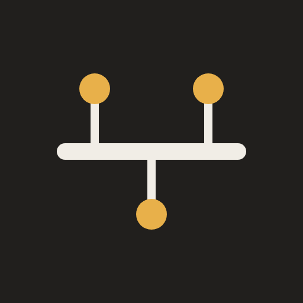

Universal Driver Bus
One bus. Every device. Mouse, keyboard and headset settings in your browser, and only what the device sends back.
One bus. Every device. Mouse, keyboard and headset settings in your browser, and only what the device sends back.

